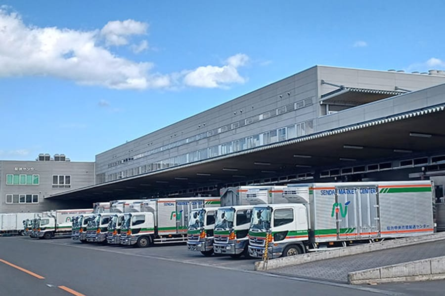

DELIVERY CENTER
配送センターDelivery Center
組合100％出資の物流子会社「株式会社仙台中央卸売市場配送センター」。産地〜市場〜小売店への配送を24時間体制で支えます。Our wholly-owned logistics subsidiary, Sendai Central Wholesale Market Delivery Center Co., Ltd., supports delivery from growers to market to retailers, around the clock.

46事業用車両Vehicles
物流子会社Logistics subsidiary
「新鮮・安全・安心」を、
「新鮮・安全・安心」を、
東北・関東へ運ぶ。Carrying freshness and safety
across Tohoku and Kanto.
当初の仙台市内配送から、現在は産地〜市場〜小売店への配送業務へと対応を広げ、東北六県・関東方面までネットワークを拡大しています。Beginning with deliveries inside Sendai, we have expanded to cover growers, markets, and retailers, with a network reaching the six Tohoku prefectures and the Kanto region.
- 運送部門Transport｜一般区域貨物自動車運送・場内荷役 · freight transport & in-market handling
- 物流部門Logistics｜24時間体制のピッキング作業 · 24-hour picking operations
- 加工部門Processing｜低温一般・水物・土物加工場を保有 · cold, wet, and soil-produce processing
PROFILE
会社概要Company Profile
| 名称Name | 株式会社仙台中央卸売市場配送センターSendai Central Wholesale Market Delivery Center Co., Ltd. |
|---|---|
| 設立Founded | 昭和48年10月15日October 15, 1973 |
| 所在地Address | 仙台市若林区卸町四丁目三番地の一4-3-1 Oroshimachi, Wakabayashi-ku, Sendai |
| 資本金Capital | 2,000万円¥20 million |
| 従業員数Employees | 120名（正社員66名・臨時社員54名）120 (66 full-time · 54 part-time) |
| 事業内容Business | 一般区域貨物自動車運送業／各種自動車のリース業／場内荷役作業／損害保険代理業／各種自動車の販売及び修理業／ガス・ガソリン及び石油製品の販売業／青果物の加工業Freight transport, vehicle leasing, in-market cargo handling, insurance agency, vehicle sales & repair, fuel & petroleum sales, produce processing |
| 配備車両Fleet | 事業用車両 46台（2024年4月現在）46 commercial vehicles (as of April 2024) |